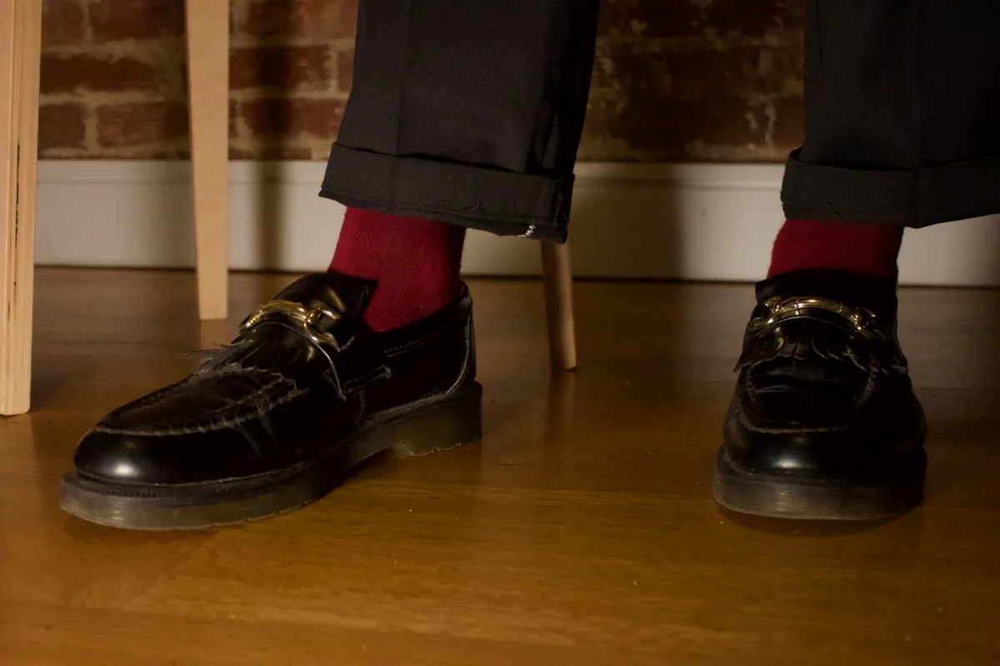

The Best Socks I’ve Found for Creepers, Loafers, and Boots
This lineup is stripped down to the essentials: brogues, loafers, creepers. The socks here are the ones I trust to sharpen the look.
This isn’t about bright colors or ironic patterns. It’s about subtle shifts — weight, length, texture — that either sharpen a look or sink it. These are the socks I actually wear, and why they work.
Note: Some links in this post are affiliate links. I may earn a small commission if you buy through them.
1. Ribbed white socks

These thick, off-white socks add a deliberate contrast to the deep oxblood brogues and pinstripe trousers, giving the outfit a clean, utilitarian edge. The color breaks up the darkness of the look without clashing — it feels intentional, not flashy. Their visible texture and heft make the outfit feel more grounded and styled, adding to the post-punk workwear vibe without overdoing it. It’s the kind of subtle statement that makes the whole look feel considered.
2. Ribbed Red Socks
The red socks cut through the dark palette with a bold, rebellious edge. Paired with creepers and cuffed pants, they add a sharp jolt of color that feels deliberate and punk without trying too hard.
3. Burgundy Socks
Color — but only barely. Burgundy is my go-to when everything else I’m wearing is black. It adds warmth without ruining the mood.
Why I wear them: They’re a quiet contrast. You notice them if you’re paying attention.
🧼 Final tip: Extra Thick Socks
Hard shoes need soft reinforcements. Fox River’s thick socks are my buffer against the break-in period (and loose fits).